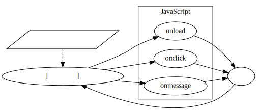
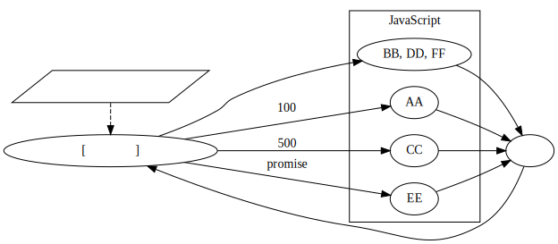

JavaScript のスレッド(非同期処理)
JavaScript は、高い応答性を保つために、多くの処理が非同期に処理されます。
一方で JavaScript のコードは、 明示的に worker を使わない限り全て 1 つのスレッドで処理されます。
ここでは、1 つのスレッドでどのように非同期処理を行なうのか、を説明します。
スレッド
JavaScript のスレッドは、次の 3 種類に分けることができます。
-
メインスレッド
- 基本的な JavaScript を実行するスレッドです。
- DOM のアクセスは、メインスレッドで行わなければなりません。
- 特に指定しない限りは、全ての JavaScript はメインスレッドで実行されます。
-
Worker スレッド
- バックグラウンドで実行したい処理がある場合、メインスレッドから明示的に実行されるスレッドです。
-
組込みスレッド
- コンテンツのダウンロードや、タイマーなどの JavaScript に組込まれている機能を実行するスレッドです。
このスレッドの内、 JavaScript のコードが実行できるのは、 メインスレッドと Worker スレッドです。
スレッドの仕様
JavaScript のスレッドは、 一般的なスレッドとは異なり、 スレッド間でのメモリの共有が限定的 です。
具体的には、以下が 出来ません。
- スレッド間で同じ変数を参照する
- スレッド間で同じ変数を変更する
これによって、マルチスレッドでよくあるデータの不整合による不具合、 というものは本質的に発生しません。
なお、全く共有が出来ないという訳ではなく、限定的にアクセスが可能になっています。
スレッド間のメモリの限定的なアクセスについては後述します。
シングルスレッド
JavaScript で開発を行なう場合、さまざまなイベントを処理します。
例えば以下のようなケースが挙げられます。
- クリックイベントのコールバック処理
- タイマーイベントのコールバック処理
- XMLHttpRequest, fetch のコールバック処理
- etc…
これら全て、コールバックを登録する処理と、 コールバックを実行する処理は、同じスレッドで実行されます。
具体的には、次のコードで示す onload イベントを実行するスレッドと、 onclickイベントを処理するスレッドは同じになります。
window.onload = function () {
let element = document.getElementById( "hoge" );
element.onclick = function() {
alert( "hello" );
}
}タイマーイベントのコールバックや、 XMLHttpRequest, fetch のコールバックも同じです。
複数のスレッドが同時に動いているように感じますが、 JavaScript のコードが動くのは 1 つのスレッドです。
なお、これは 1 つのタブに閉じた話で、 タブが複数ある場合は、 「1 x タブの個数」の独立したスレッドがあります。
ここで注意するのは、 「JavaScript のコードを動かす 1 つのスレッド」とは別に、 タイマーのカウントや、XMLHttpRequest のアクセスを行なうスレッドが 存在することです。 そしてこれが「組込みスレッド」です。
JavaScript のコードを実行するスレッド (メインスレッド、worker スレッド)と、 組込みスレッドの関係は大まかに次のようになります。
- JavaScript のコードから、「組込みスレッド」に対して処理を依頼
- 組込みスレッドは依頼された処理を行なう
- 組込みスレッドの処理が終了したら、イベントを処理依頼元のスレッドに通知する
- 処理依頼元のスレッドは、イベントを受け、 イベントに予め登録されているコールバックを実行する
このように、 「組込みスレッドから通知されたイベントを受信し、 そのイベントに予め登録されているコールバックを実行する」 処理が必要になります。 しかし、この処理って JavaScript 上には書きませんよね？ JavaScript には、「あるイベント」と「そのイベントに対する処理」を書くだけです。
つまり JavaScript のコード上には現れませんが、 JavaScript には「イベント待ち」が隠れています。
図示すると次のようになります。
組込みスレッドからのイベント通知を受け、 そのイベントに応じてユーザの JavaScript を実行します。
これが JavaScript を実行するスレッドの中身です。
digraph G {
rankdir = LR;
builtin_thread [shape = parallelogram;label = "組込みスレッド"]
event_loop [label = "イベント待ち[隠れている]"];
subgraph cluster_B {
label = "ユーザのJavaScript";
on_event1 [label = "onload"];
on_event2 [label = "onclick"];
on_event3 [label = "onmessage"];
edge [style=plain]
event_loop -> on_event1
event_loop -> on_event2
event_loop -> on_event3
on_event1 -> end
on_event2 -> end
on_event3 -> end
end -> event_loop
}
end [label=""];
{rank = max; end}
{rank = min; event_loop; builtin_thread}
edge [style=dashed]
builtin_thread -> event_loop [label="イベント通知"]
}
ここで、先程のサンプルをもう一度見てみます。
window.onload = function () {
let element = document.getElementById( "hoge" );
element.onclick = function() {
alert( "hello" );
}
}このサンプルは、次のように処理されます。
- 「イベント待ち」から onload() が実行され、処理終了後「イベント待ち」に戻る。
- 「イベント待ち」から onclick() が実行され、処理終了後「イベント待ち」に戻る。
ここで重要なことは次の 2 点です。
- 必ず「イベント待ち」に戻る
- 同じスレッドで実行される
これは、 JavaScript で開発を行なううえで、 非常に基本的で重要なこと なのでしっかり理解してください。
JavaScript のコードは、必ず「イベント待ち」に戻ります。
スレッドの処理がこの「イベント待ち」状態にある時 に、 何かイベントが発生すると、即座にそのイベントを処理することが出来ます。
逆にスレッドの処理がこの「イベント待ち」状態にない場合 (他の処理を行なっている場合)、 何かイベントが発生しても、そのイベントを処理することが出来ません。 例えば、「クリックしても反応がない」などがそれです。
応答性の高い Web ページを作成するには、 常に「イベント待ち」状態にしておくことが重要 です。
async/await
前述した通り JavaScript では、 出来るだけ「イベント待ち」状態にしておくことが重要です。
そのためには、「処理が終わるのを待って処理結果を得る」、 という動作を統一的なインタフェースで扱えるようにすると、 コードがシンプルになります。
これを実現するのが async/await です。
まず、次の処理を見てください。
function hoge() {
fetch( "/hoge.json" ).then(
response => response.json().then(
jsonObj => console.log( jsonObj )
)
);
}
function sub() {
hoge();
}
この処理は、 /hoge.json から JSON 文字列をダウンロードし、
JSON デコードした結果を console に出力するプログラムです。
ここで then() というメソッドが、 2 回登場しています。
この then() は、 処理が終った時のコールバックを登録するメソッドです。
この処理の動きを説明すると、次になります。
- fetch に "/hoge.json" のダウンロード処理の要求と、 ダウンロード成功時のコールバックを登録して、 hoge() 呼び出し元 sub() に戻る。
-
"/hoge.json" のダウンロード成功後、 登録しておいたコールバックが「イベント待ち」から実行される。
- ここで、ダウンロード結果を JSON 変換要求と、JSON 変換成功時のコールバックが登録され、 「イベント待ち」に戻る。
-
JSON 変換成功後、 登録しておいたコールバックが「イベント待ち」から実行される。
- ここで、変換した JSON オブジェクトを console.log で出力する。
このように、 「依頼した処理が終ったら次の処理の依頼を行なう」というケースは プログラムに良くあります。
上記の場合は 2 回ですが、これが複数の処理を連続して行なう場合、
then() のコールバック処理が複数回ネストされ、
理解し難いコードになってしまいます。
これをシンプルに書けるようにしたのが async/await です。
上記処理を async/await を使って書くと、次になります。
async function async_hoge() {
let response = await fetch( "/hoge.json" );
console.log( await response.json() );
}
function sub() {
async_hoge();
}
ここで注意するべきことは、
.then() を使ったケースと、
async/await を使ったケースとで、実行結果は全く変わらない、ということです。
async/await を使うと、まるで同期処理が行なわれているようですが、
実際には非同期処理が行なわれます。
あくまでも、 then() をつかったコールバックの登録を、
このように await で書ける、というものです。
なお、 この then() メソッドは Promise オブジェクトのメソッドです。
つまり、上記 fetch() や、response.json() の戻り値は Promise オブジェクトです。
await は Promise オブジェクトに対して処理を行ないます。
また、 await は Promise オブジェクトに対して使用した時の動作については、 次のリンクを参照してください。
<https://developer.mozilla.org/ja/docs/Web/JavaScript/Reference/Operators/await>
ここで await を使う際の注意です。
await を利用できるのは async 宣言した関数内だけです。
await の動作
await は then() 呼び出しの処理を簡単化したものです。
では、次の処理はどの様な console 出力を行なうか分かりますか？
async function test() {
function busyWait() {
let prev = (new Date()).getTime();
while ( (new Date()).getTime() - prev < 1000 ) {
}
}
setTimeout(() => console.log("AA"), 100);
busyWait();
console.log("BB");
let promise = new Promise( (resolve, reject ) => {
setTimeout( function () { resolve("CC"); }, 500 );
} ) ;
console.log("DD");
let result = await promise;
console.log( result );
busyWait();
console.log("EE");
}
test();
console.log("FF");正解は次です。
BB
DD
FF
AA
CC
EEこの理由を説明します。
- まず、最初に
setTimeout(() => console.log("AA"), 100);によって、 100 ミリ秒後に AA を出力するようにタイマーをセットします。 - 次に、
busyWait()します。 この関数は 1 秒間単純にループします。 - ここで、 AA を出力する 100 ミリ秒タイマーは経過しています。 しかし、 AA は出力されません。
- そして、
busyWait()が終わってconsole.log("BB");によって、 BB が出力されます。 - なぜ AA が出力されずに BB が出力されるか？ それは、 タイマーイベントの処理は、 「イベント待ち」に戻ってから実行されるものだからです。
- 次に
let promise = new Promise( (resolve, reject ) => {処理があります。 これは、500 ミリタイマーをセットする Promise オブジェクトを生成しています。 - 次の
console.log("DD");によって、 DD が出力されます。 この時点でも AA は出力されません。 - 次の
await promise;は、 promise オブジェクトの終了を待ちます。 - この await の時に、一旦 test() 関数の処理が中断されて処理が抜けます。 これによって、この test() 関数呼び出し元に戻ります。
- そして、
console.log("FF");によって FF が出力されます。 - ここで、一旦全ての処理が終わり、「イベント待ち」に戻ります。
- 「イベント待ち」に戻ったことで、 AA を出力するタイマーイベントが処理 され、 AA が出力されます。
- そして、 500 ミリタイマーイベントも同様に処理されます。 ここで 500 ミリタイマーは、 promise に処理結果 "CC" をセットします。
await promiseは、promise の処理(500ミリタイマー)が終わり、かつ、 「イベント待ち」になったことを契機に動き出します。 これによって、resultに CC が格納されます。- 次に
console.log( result );によって、 CC が出力されます。 - 次に
busyWait();が入ります。 - そして最後に
console.log("EE");で EE が出力されます。
以上が Promise/async/await の動作です。
大まかな流れを図示すると次の通りです。
digraph G {
rankdir = LR;
builtin_thread [shape = parallelogram;label = "組込みスレッド"]
event_loop [label = "イベント待ち[隠れている]"];
subgraph cluster_B {
label = "ユーザのJavaScript";
on_event1 [label = "BB, DD, FF"];
on_event2 [label = "AA"];
on_event3 [label = "CC"];
on_event4 [label = "EE"];
edge [style=plain]
event_loop -> on_event1
event_loop -> on_event2 [label="100ミリタイマー"]
event_loop -> on_event3 [label="500ミリタイマー"]
event_loop -> on_event4 [label="promise 処理終了"]
on_event1 -> end
on_event2 -> end
on_event3 -> end
on_event4 -> end
end -> event_loop
}
end [label=""];
{rank = max; end}
{rank = min; event_loop; builtin_thread}
edge [style=dashed]
builtin_thread -> event_loop [label="イベント通知"]
}
重要なのは、次の 2 つです。
- await は、一時的に実行中の async 関数の処理を中断し、 async 関数の処理を戻す
- await は、 Promise の処理が終了し、「イベント待ち」になると動きだす
ここからも、 await が then() と等価であることが分かります。
なお、上記の test() 呼び出しの際、
await test() にした場合 の出力結果は以下です。
BB
DD
AA
CC
EE
FF
await test() にしたことで、 test() の実行を待つため、
FF の出力が test() 実行後になります。